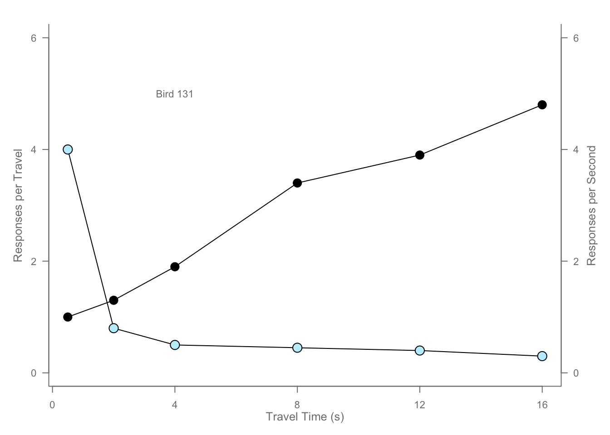

# Scatterplot
# Data preparation for plotting. This data is incremental.
x <- c(0.5, 2, 4, 8, 12, 16)
y1 <- c(1, 1.3, 1.9, 3.4, 3.9, 4.8)
y2 <- c(4, .8, .5, .45, .4, .3)
# Setting label orientation, margins c(bottom, left, top, right) & text size
par(las=1, mar=c(4, 4, 2, 4), cex=.7)
# This line sets parameters for the axis
# par() function sets the different graphical parameters
# las = 1 means the means that the axis labels will be horizonral
# mar=c(4, 4, 2, 4) indicates the margins of the plot.It means the bottom = 4 lines, left = 4 lines, top = 2 lines and right = 4 lines.
plot.new() # An empty plot window
plot.window(range(x), c(0, 6)) # Defines the plotting area by coordinates. In this case, the range(x) function sets the limits of x-axis with the values of x and c(0,6) limits the y-axis from 0 to 6.
lines(x, y1) # adding line to the existing plot with values of x and y1
lines(x, y2) # adding line to the existing plot with values of x and y1
points(x, y1, pch=16, cex=2) # Plotting points to the existing plot on x and y1 values with solid circles and regular relative size
points(x, y2, pch=21, bg="lightblue1", cex=2) # Here the fill color is light blue and the point size is twice as big than the first line
par(col="gray50", fg="gray50", col.axis="gray50") # sets global values for plot elements to gray50. fg = "gray50" sets the global foreground color to gray 50 and col.axis sets the color of axis elements to gray50.
axis(1, at=seq(0, 16, 4)) # Sets the range and break values of the horixzontal axis. The axis will show ticks for 0-16 with an interval of 4.
axis(2, at=seq(0, 6, 2)) # Sets the range and break values of the first y axis. The axis will show ticks for 0-6 with an interval of 2.
axis(4, at=seq(0, 6, 2)) # Sets the range and break values of the second axis. The axis will show ticks for 0-6 with an interval of 2.
box(bty="u") # adds a box to the plot where bty = u means the box will only appear on left, bottom and right side
mtext("Travel Time (s)", side=1, line=2, cex=0.8) # adds text to the bottom (x axis) of the plot starting 2 lines away from the axis and cex = 0.8 means the text size is reduced to 80% of the default size
mtext("Responses per Travel", side=2, line=2, las=0, cex=0.8) # adds text to the left (y1 axis) of the plot starting 2 lines away from the axis and cex = 0.8 means the text size is reduced to 80% of the default size
mtext("Responses per Second", side=4, line=2, las=0, cex=0.8) # adds text to the right (y2 axis) of the plot starting 2 lines away from the axis and cex = 0.8 means the text size is reduced to 80% of the default size.
text(4, 5, "Bird 131") # adds a custom text on the x =4, y = 5 coordinate
par(mar=c(5.1, 4.1, 4.1, 2.1), col="black", fg="black", col.axis="black") # Resets the plot parameter values where mar=c(5.1, 4.1, 4.1, 2.1) is the plot margins, col = "black" is the default color, fg = "black" sets the foreground color to black and col.axis = "black" sets the default axis color to black